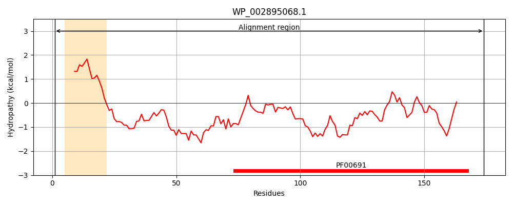
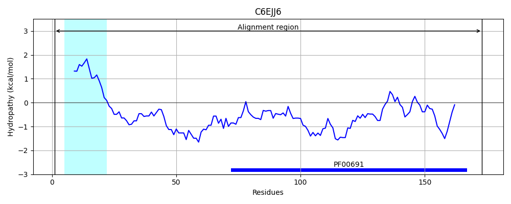
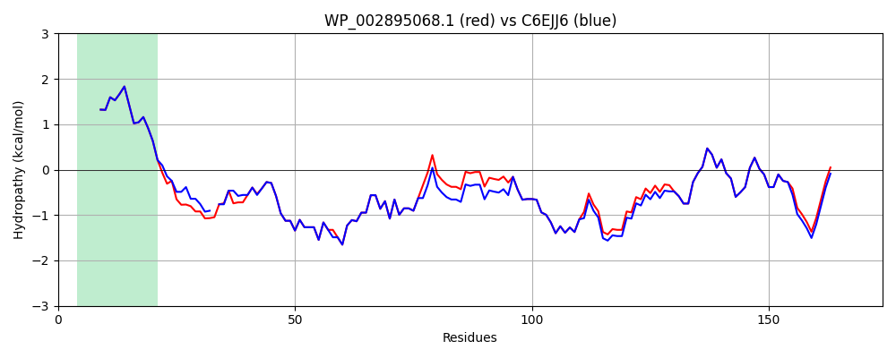

Hit Accession: C6EJJ6
Hit TCID: 2.C.1.2.1
Hit Description: gnl|BL_ORD_ID|2594 gnl|TC-DB|C6EJJ6|2.C.1.2.1 Pal, subunit of The Tol-Pal Cell Envelope Complex, Colicin S4 Transport System and The Colicin A Import System OS=Escherichia coli (strain B / BL21-DE3) GN=pal PE=3 SV=1
Mach Len: 174
e:0.000000
Query TMS Count : 1
Hit TMS Count: 1
TMS-Overlap Score: 0.900000
Predicted Substrates:CHEBI:8150;phospholipid
BLAST Alignment:
Score: 836 , Bit scores: 326 bits, E-value: 2.1e-116, Alignment length: 174, Percentage identity: 96
Query: 1 MQLNKVLKGLMIALPVMAIAACSSNKNASNDQSGEGMLGAGTGMDANGNGGNMSSEEQARLQMQQLQQNNIVYFDLDKYDIRSDFAAMLDAHANFLRSNPSYKVTVEGHADERGTPEYNIALGERRANAVKMYLQGKGVSADQISIVSYGKEKPAVLGHDEAAYAKNRRAVLVY 174
MQLNKVLKGLMIALPVMAIAACSSNKNASND S EGMLGAGTGMDANG GNMSSEEQARLQMQQLQQNNIVYFDLDKYDIRSDFA MLDAHANFLRSNPSYKVTVEGHADERGTPEYNI+LGERRANAVKMYLQGKGVSADQISIVSYGKEKPAVLGHDEAAY+KNRRAVLVY
Sbjct: 1 MQLNKVLKGLMIALPVMAIAACSSNKNASNDGS-EGMLGAGTGMDANGGNGNMSSEEQARLQMQQLQQNNIVYFDLDKYDIRSDFAQMLDAHANFLRSNPSYKVTVEGHADERGTPEYNISLGERRANAVKMYLQGKGVSADQISIVSYGKEKPAVLGHDEAAYSKNRRAVLVY 173 | Protein Hydropathy Plots: |
|---|
|  |  |
Pairwise Alignment-Hydropathy Plot:
|
|---|
|  |